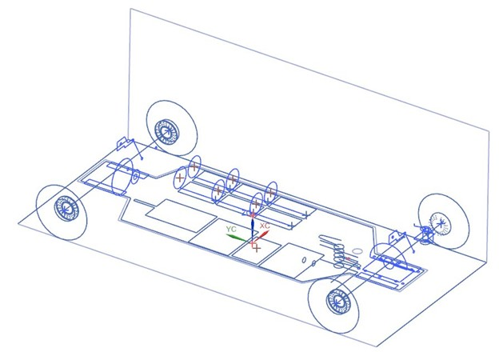
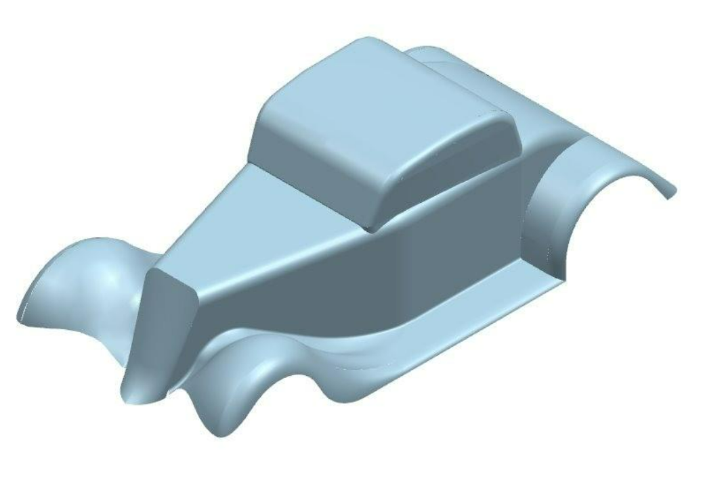
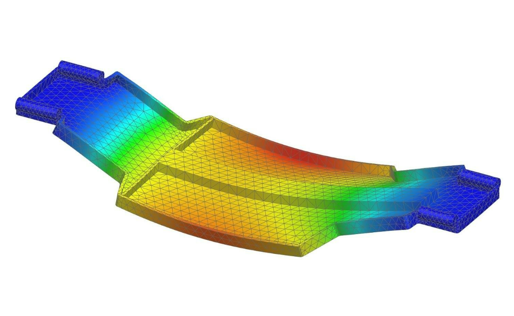
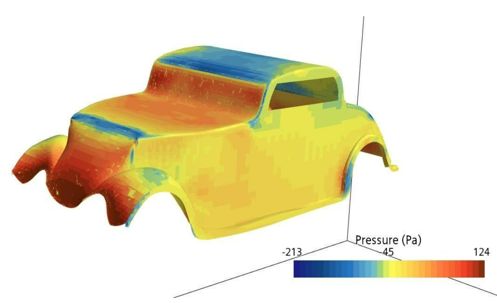

A 3D Wire Frame was made with planes and splines. Then, 2D surfaces were generated and spliced together to form the shell.
The Quality of the curvature continuity was maintained with appropriate degrees of curvature and tangency.
The skin was designed for vacuum forming manufacturability with draft surfaces


Each part in the assembly was redesigned for strength and rigidity using FEA simulations.
Topology optimization was used to reduce the weight and stress on each part based on the calculated forces the RC car experiences. This practice is used in F1 Racing to minimize the total weight of the car with complex carbon fiber structural components.
The surface of the car was optimized to reduce the drag load on the assembly. Because the car was designed parametrically, different surfaces could quickly be iterated on and tested to find the minimum drag.
